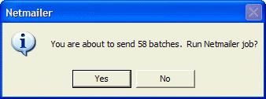
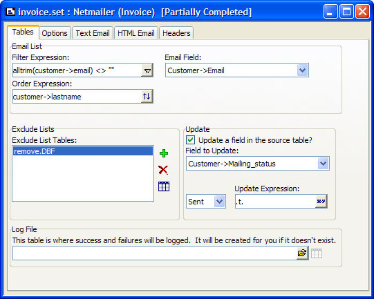
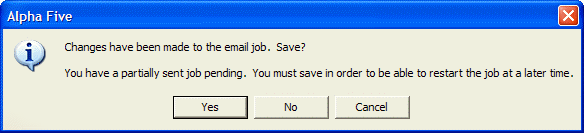

Stopping and Resuming a Mailing Job
Perhaps, your mailing job involves sending email to a large number of customers. You might need to interrupt the mailing before it is completed. With Netmailer, you can stop a partially completed mailing job, then resume mailing from the stopping point, when you are ready.
Stopping a Mailing Before Completion
Start Alpha Five and open a database.
Right-click on a table or set, and select Addins > Netmailer > Run Job.
Select a Netmailer job, and click Next >.
Click Next > Finish to run the job.
A Netmailer Progress window appears displaying the mailing job status.
Click the Stop button.
Right-click on a table or set, and select Addins > Netmailer > Run Job.
Select the partially completed Netmailer job, and click Next >Next > Finish. The following message window appears.
Click Yes. Netmailer completes the mailing job. If you click No, Netmailer restarts and runs the job from the beginning.
Stop and Resuming a Job Using the Netmailer Editor
Right-click on a table or set, and select Addins > Netmailer > Edit Job. The Choose Netmailer Job dialog appears.

Select a Netmailer job, and click OK. The job appears in the Netmailer Editor.
Click the
 Run button on the toolbar. A confirmation
message appears.
Run button on the toolbar. A confirmation
message appears.

Click Yes. A Netmailer progress window appears displaying the mailing job status.
Click the Stop button. The following message window appears.
Click OK. The partially completed job appears in the Netmailer Editor.

Next to the mailing job name, Netmailer displays "Partially Completed" in the title bar, indicating that this job has been partially sent, but there are additional messages to send before its completion.
The asterisk (*) in the title bar indicates that changes have been made which require you to save the job. If you click the close button in the Editor window, the following message appears:

Click Yes. Netmailer saves the partially completed job. You can complete the mailing job at another time.
See Also